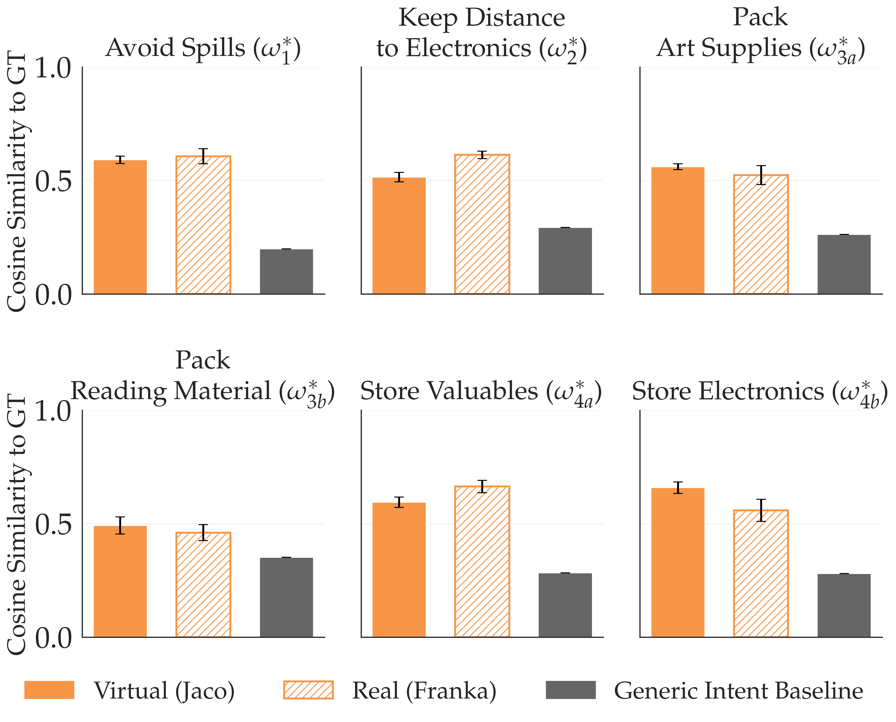
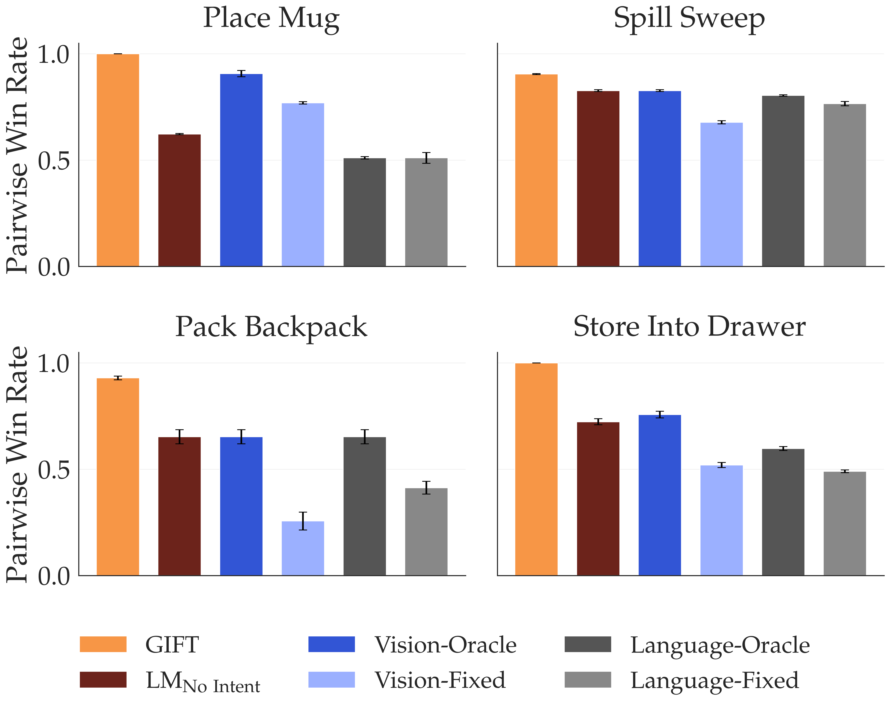
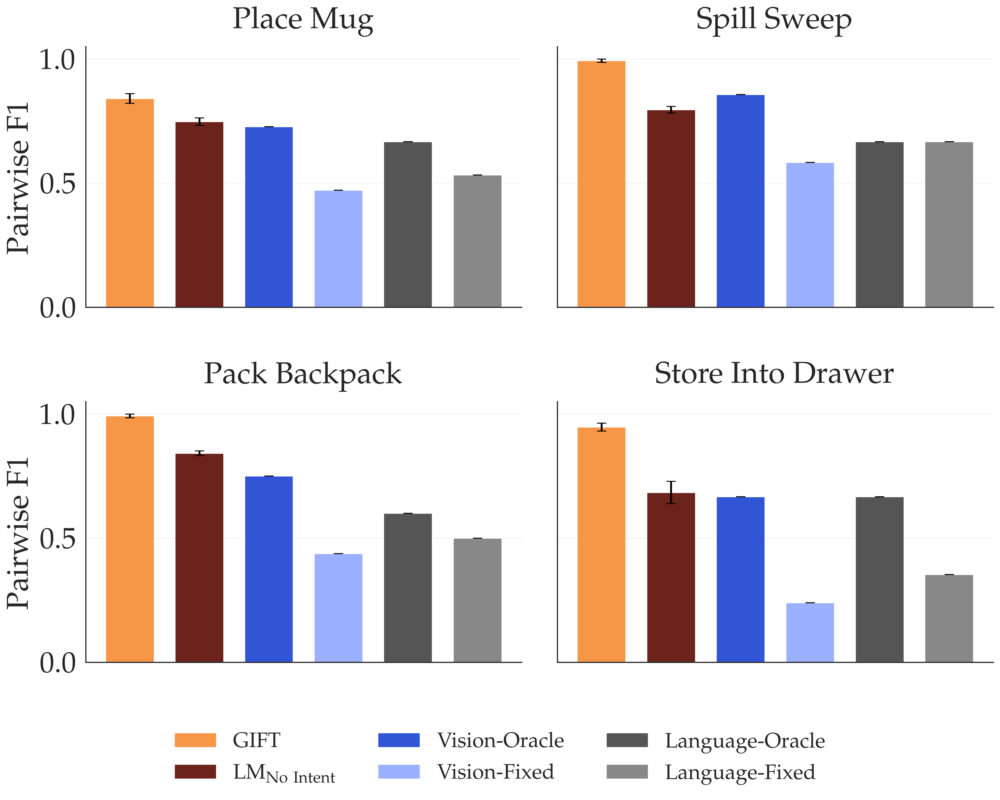
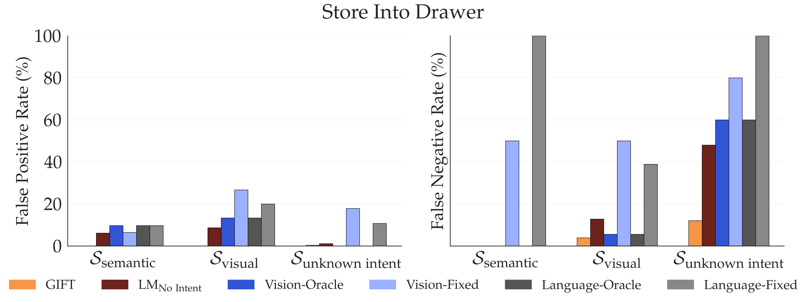
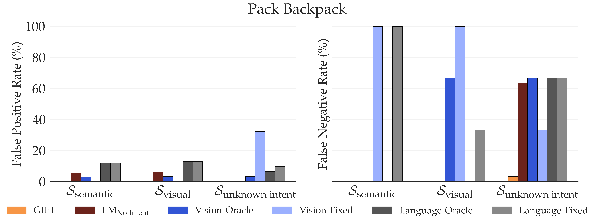
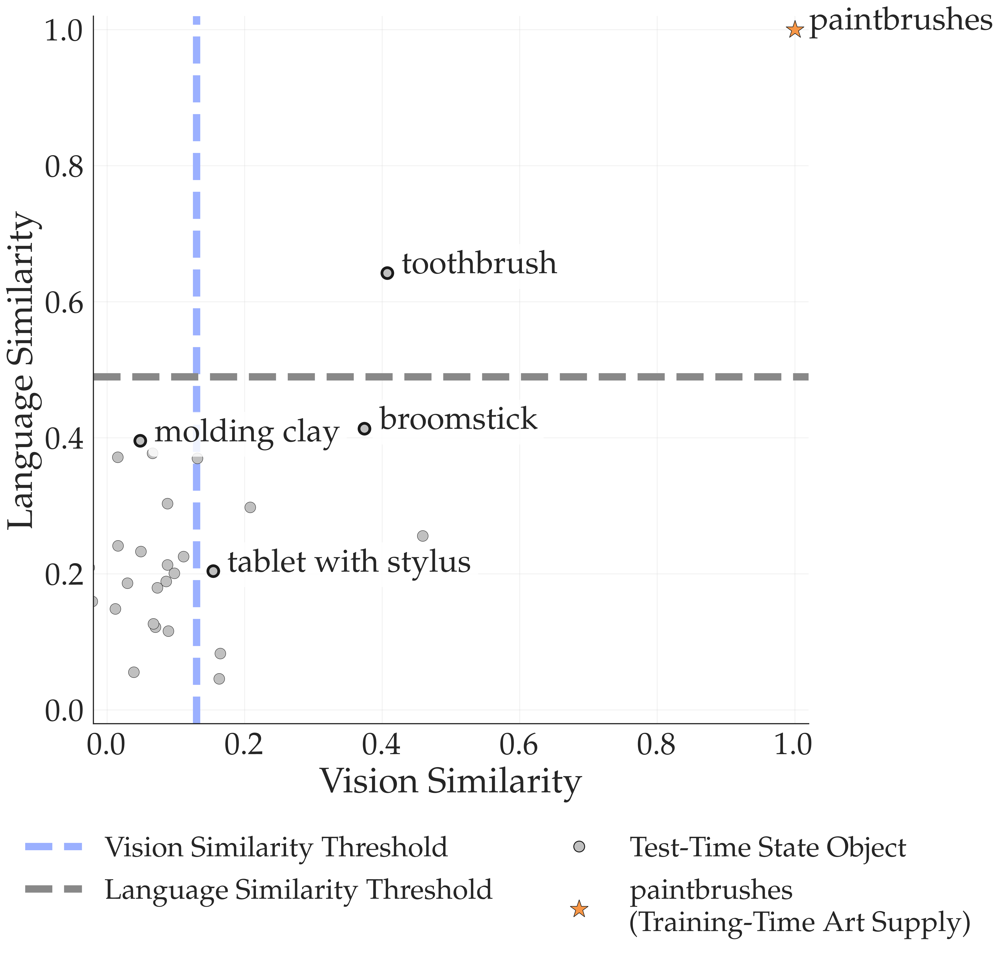
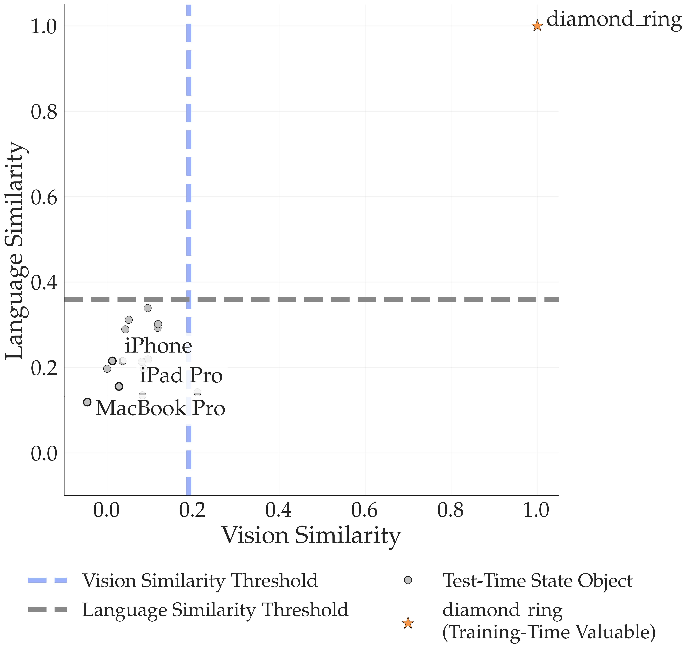
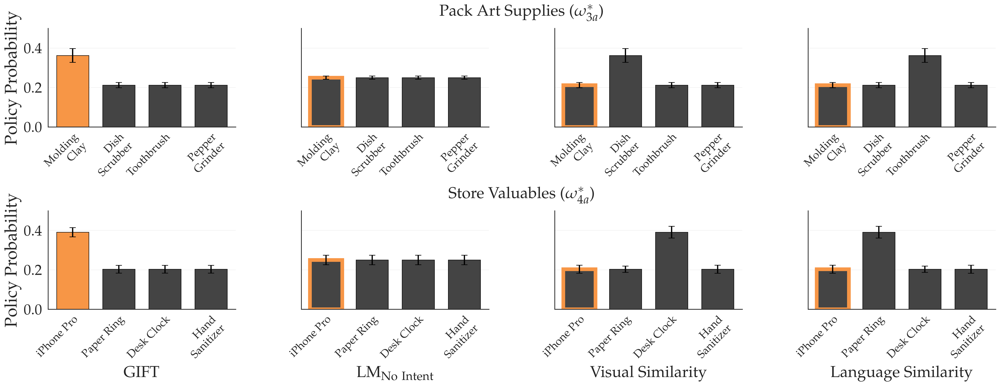

Replace with a hosted embed (YouTube/Vimeo) or smaller MP4 if needed.
How can a robot generalize a learned reward by reasoning about what the human intended, not what looks or sounds similar?
Robots learn reward functions from user demonstrations, but these rewards often fail to generalize to new environments. This failure occurs because learned rewards latch onto spurious correlations in training data rather than the underlying human intent that demonstrations represent. Existing methods leverage visual or semantic similarity to improve robustness, yet these surface-level cues often diverge from what humans actually care about. We present Generalizing Intent for Flexible Test-Time rewards (GIFT), a framework that grounds reward generalization in human intent rather than surface cues. GIFT leverages language models to infer high-level intent from user demonstrations by contrasting preferred with non-preferred behaviors. At deployment, GIFT maps novel test states to behaviorally equivalent training states via intent-conditioned similarity, enabling learned rewards to generalize across distribution shifts without retraining. We evaluate GIFT on tabletop manipulation tasks with new objects and layouts. Across four simulated tasks with over 50 unseen objects, GIFT consistently outperforms visual and semantic similarity baselines in test-time pairwise win rate and state-alignment F1 score.
Generalizing Intent for Flexible Test-Time rewards. Left. GIFT infers the human's intent given pairs of human-preferred demonstrations and reference trajectories. Right. During inference, GIFT deduces which objects in the unseen states should behave as objects in the training states. Afterwards, the unseen state components are aligned to training states so that the reward function learned before deployment can be used for planning.
GIFT achieves test-time reward generalization by defining a state similarity function conditioned on the human’s high-level intent. This allows novel test states to be mapped into the training domain so the learned reward can be reused without retraining.
Inferring high-level intent. GIFT first infers the user’s underlying intent by contrasting human-preferred demonstrations with reference trajectories from the same scenes. The LM outputs a natural-language summary of the high-level intent that explains why the preferred behavior is preferred.
Intent-conditioned alignment. Given the inferred intent, GIFT treats states as similar based on that intent rather than low-level visual or language features. At test time, GIFT aligns each novel state to its nearest intent-equivalent training state, so unseen objects can be interpreted according to the same task-relevant roles seen during training.
Test-time reward reuse. After alignment, GIFT evaluates the aligned trajectory with the fixed reward learned on the training data. In this way, the alignment operator carries the burden of generalization, while the reward itself remains unchanged at deployment.
We evaluate GIFT on four tabletop manipulation tasks under test-time distribution shift, including unseen objects, new layouts, and real-world deployment. We compare against visual similarity, language similarity, and an LM-based mapping baseline without inferred intent.
The tasks span distinct forms of high-level intent:
Before evaluating reward generalization, we first verify that the LM infers reasonable high-level intents from demonstrations. We then study three questions: whether intent-conditioned similarity improves test-time reward performance, whether it improves state alignment under confounds, and whether it transfers to the physical world.
We compare LM-inferred intent against the ground-truth task intent in both simulation and real-world demonstrations. This checks whether the inferred intent is a usable conditioning signal for alignment.

Similarity between LM-inferred intent and ground-truth intent for simulated Jaco and real-world Franka demonstrations. We gave the LM three demonstration pairs from a virtual Jaco robot and a real-world Franka robot, and tasked it with deducing the human's intent. We found that LMs produced an acceptable conditioning variable for alignment.
We evaluate pairwise win rate: given two candidate trajectories, can the method correctly predict which behavior the human would prefer at test time?

Test-time pairwise win rate across the four tasks. GIFT achieves the highest win rate across environments and unseen objects.
We next study where low-level similarity breaks down. Each method maps a test-time object either to a training-time role or to a distractor, and we evaluate the resulting alignment using F1, false positives, and false negatives. For the more complex tasks, we also isolate confounding cases involving similar names, similar appearances, and objects whose grouping depends on the intended task.

Test-time state-alignment F1 across tasks. GIFT achieves the strongest overall alignment by conditioning on intent rather than surface similarity.


FP/FN (%) on the Confounding States, Sconf. GIFT remains low across categories by using intent-relevance. On the other hand, the oracle baselines merely retune thresholds and trade errors across confounds. Thresholding cannot correct a misaligned similarity signal, and therefore they show high errors. GIFT's ablation, LMNo Intent, is less performant due to not recognizing which test states are intent relevant, leading to a high FN rate.
To understand these failures qualitatively, we also inspect how low-level language and vision similarities organize unseen objects. In the Pack Backpack task, distractors such as toothbrush and broomstick are pulled toward paintbrush, while relevant objects such as molding clay and tablet with stylus are pushed away. In the Store Valuables task, low-level similarity makes paper ring appear too close to diamond ring, while other valuable items can appear too dissimilar.

Language-vision similarity plot for Pack Backpack with Art Supplies. Relevant unseen art supplies can look dissimilar to the training anchor, while distractors can appear spuriously close.

Language-vision similarity plot for Store Valuables. Low-level similarity can confuse irrelevant items with the training anchor and fail to consistently capture value-relevant semantics.
We recreate two tasks on a 7-DoF Franka Panda robot using held-out physical objects. For each method, we repeatedly sample small sets of executable candidate trajectories, score them with the induced reward, and convert those scores into a Boltzmann distribution over the candidates. This tests whether intents inferred from real-world demonstrations can guide reward reuse at deployment.

Real-world behavior on Franka. GIFT places more probability mass on held-out objects that match the inferred intent, such as packing molding clay and storing valuable items, while treating confounds as distractors.
Below are example scenarios on a physical robot. Replace the placeholder videos with your final clips when ready.
Baseline
GIFT
Baseline
GIFT
Note: rename video files to remove spaces for maximum compatibility.
Replace with a hosted embed (YouTube/Vimeo) or smaller MP4 if needed.
@inproceedings{amin2026gift,
title = {GIFT: Generalizing Intent for Flexible Test-Time Rewards},
author = {Amin, Fin and Dennler, Nathaniel and Bobu, Andreea},
booktitle = {IEEE International Conference on Robotics and Automation (ICRA)},
year = {2026}
}Update the venue/year/key once the submission details are finalized.